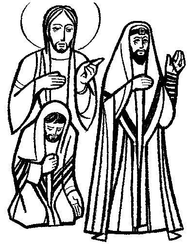
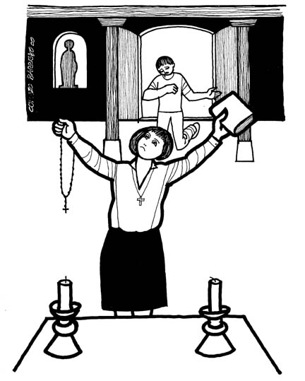

This Week: Joel 2:23-32 and Psalm 65 or [Sirach 35:12-17 or Jeremiah 14:7-10, 19-22] and Psalm 84:1-7, 2 Timothy 4:6-8, 16-18, Luke 18:9-14

Misioneros Del Sagrado Corazón en el Peru

Cerezo Barredo's weekly gospel illustrations
Next week: Habakkuk 1:1-4, 2:1-4 and Psalm 119:137-144 or Isaiah 1:10-18 and Psalm 32:1-7, 2 Thessalonians 1:1-4, 11-12, Luke 19:1-10